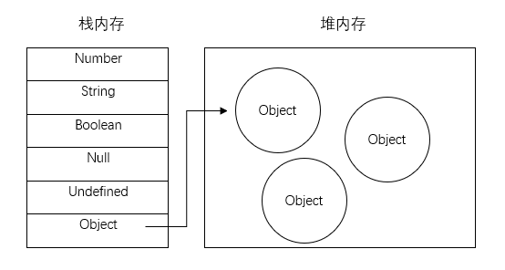

JS小记
[javascript 一些记录 JavaScript 的东西。
取整小记
因为JavaScript里面都是浮点数，所以有时候运算操作需要取整操作
- 四舍五入
Math.round() - 向上取整
Math.ceil() - 向下取整
Math.floor() - 向下取整
~~(参见常用位运算) - 向下取整
parseInt()(可以用来取整，但定义是解析字符串，返回整数 详见)
变量存储方式
- 栈(stack)：自动分配内存空间，系统自动释放，里面存放的是基本类型的值和引用类型的地址
- 堆(heap)：动态分配内存，大小不定，不会自动释放，里面存放的引用类型的值

Array.includes 处理多重条件
function func(arg) {
if (arg === 'A' || arg === 'B' || arg === 'C') { /* do something */ }
}
function func(arg) {
const arr = ['A', 'B', 'C'];
if (arr.includes(arg)) { /* do something */ }
}
Array.every 和 Array.some 处理条件
const arr = [
{ name: 'AA', age: 10 },
{ name: 'BB', age: 20 },
{ name: 'CC', age: 30 }
]
// 满足全部条件
const bool = arr.every(item => item.name === 'AA');
// 满足部分条件
const bool = arr.some(item => item.age < 35);
接收参数的方式
function func(url, res, search, page, limit) {} // 需要记住参数顺序
function func({url, res, search, page, limit}) {} // 不需要记住参数顺序，记参数名称
对象转数组
const nubmers = {
one: 1,
two: 2,
}
const key = Object.keys(numbers); // ['one', 'two']
const value = Object.values(numbers); // [1, 2]
const entry = Object.values(numbers); // [['one': 1], ['two', 2]]
数组的判断
- 判断是否为数组：
Array.isArray() - 类数组转化数组：
Array.from()
检查是否为工作日
const isWeekday = date => date.getDay() % 6 !== 0;
console.log(isWeekday(new Date(2021, 0, 24))); // false (Sunday)
console.log(isWeekday(new Date(2021, 0, 25))); // true (Monday)
slice 和 splice 的区别
- slice 返回给定数组的浅拷贝数组，
arr.slice([begin[, end]]) - splice 通过删除或者替换现有的元素，也可以在指定位置新增元素更改数组的元素。
let deletedItems = array.splice(start[, deleteCount[, item1[, ...]]]) - slice 从数组中浅拷贝，不会更改原数组，返回浅拷贝的新数组。
- splice 在原数组修改，返回被删除的项。
concat 和 push
var arr = [1, 2];
arr.push(3); // arr: [1, 2, 3]
arr.push([4, 5]) // arr: [1, 2, 3, [4, 5]]
var arr = [1, 2];
var arrA = arr.concat(3); // arr: [1, 2]; arrA: [1, 2, 3];
var arrB = arr.concat([4,5]); // arr: [1, 2]; arrB: [1, 2, 4, 5];
两个主要区别:
push(..)原数组上操作，concat(..)返回操作后的新数组- 参数为数组的时候，
push(..)直接添加，concat(..)会进行提取值再添加
可选链操作符?.
可选链操作符 ?. 允许读取位于连接对象链深处的属性的值，而不必验证链中的每个引用是否有效。?. 操作符的功能类似于 . 链式操作符，不同在于，在引用 null 或 undefined 的情况下不会引起错误，该表达式短路返回 undefined
const obj = {};
console.log(obj && obj.a && obj.a.b && obj.a.b.c);
console.log(obj?.a?.b?.c); // 不会报错，原因是?.遇到是空值的时候便会返回 undefined
空值合并操作符??
空值合并操作符 ?? 是一个逻辑操作符，当左侧的操作数为 null 或者 undefined 时，返回右侧的操作数，否则返回左侧的操作数。
leftExpr ?? rightExpr
空值合并操作符一般用来为常量提供默认值，保证常量不会为 null 或者 nudefined。
以前经常使用逻辑或操作符 || 进行操作。但是 || 左侧的操作数会被转换成布尔值进行求值，常见的假值（0, ‘‘）会遇到意料之外的行为。
false || 'foo'; // 'foo'
0 || 'foo'; // 'foo'
'' || 'foo'; // 'foo'
false ?? 'foo'; // false
0 ?? 'foo'; // 0
'' ?? 'foo'; // ''
计算属性名
在对象里，[..]: ..的语法被称为计算属性名，指定一个表达式并用这个表达式的结果作为属性的名称。